9. Embedded programming¶
With the basic knowledge of PCB and soldering, this week I continued the electronics courses taught by Antti Mäntyniemi for embedded programming on a STDI chip. The learning objective is to produce a programmed STDI PCB board with an LED controlled by a button. The functions of LED and the button shall be programmmed. I guess this is the foundation for Input design.
This time the course is a typical engineering style: use a professional software (KiCad) to design the work, then realise it with computer-controlled machine (LPKF ProtoMat S62).
Based on the prior knowledg of PCB, Antti M used reverse engineering to teach. He made me observe a prototype of final PCB work, and guided me to think, disassemble the process of realisation backwards.
Below is target work of schematic:

as well as the target work of PCB:
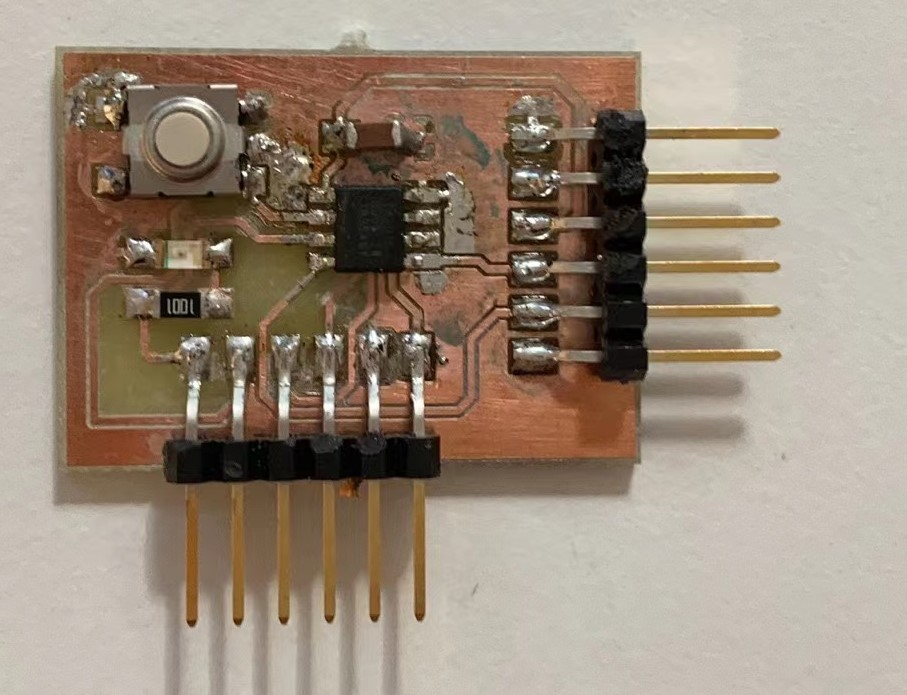
Research¶
The use of fablab treasure box¶
One of the most important things for independent study is to find the right resources. Antti used the Fablab course material website which I found significant as I can find all necessary stuff recognised by Fablab.
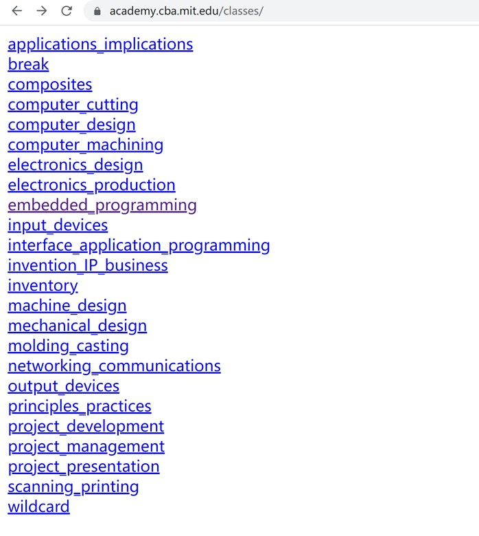
Some basic or updated knowledge¶
the terms¶
-
embedded programming: to use microcontrollers as the savers for specific programming. For example, the reason why smartphones and electronic devices can be “smart” is that engineers programme certain functions and store them in the microcontrollers (usually known as chips) to allow users to interact.
-
pin: the “leg” of electric components.
-
capacitor: It can store electrical energy from some resources like battery. The difference is that, batteries store energy chemically, while capacitors realise it physically.
-
GND: abbreviation for “ground”, which serves to be a common return path for electric current.
The relation between PCB and electronic schematic¶
PCB stands for printed circuit board. The board is a physical representation of schematic that can be understood as the “logic” or “soul” of the board. By programming the component functions in schematic, you can define the connections of the pins as well as the workflows of the PCB.
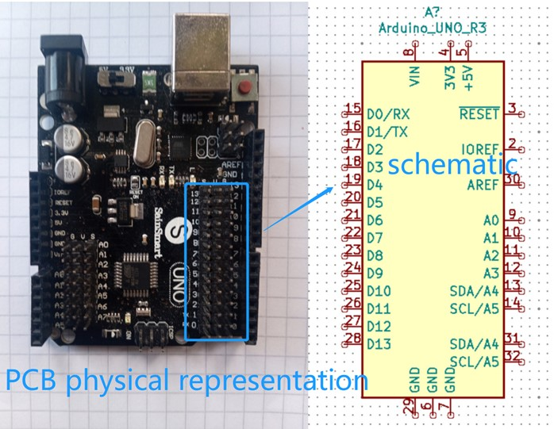
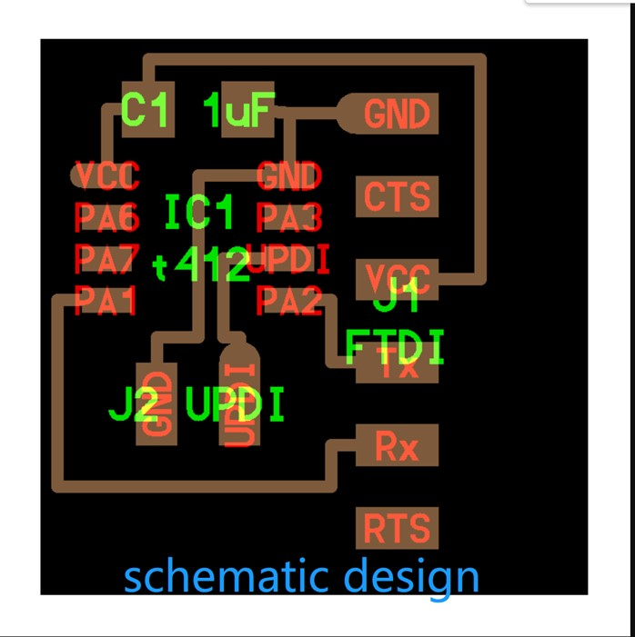
Procedure¶
Use KiCad to set 2 printable files¶
For this step, we used KiCad as the software to design the schematic.
Below is the interface of Kicad.
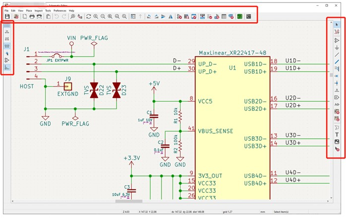
Set up the KiCad Libraries¶
Open a new schematic file.
An important feature of embedded programming is that you do NOT have to scratch from the surface, but can directly search for the needed items in the digital libraries.
To realise it, open KiCad. You have to install required libraries (for example: fab contains 17,241 items). Luckily, they have all been properly set in the desktops of Fablab Oulu.
Find proper Items(components)¶
The needed items are:
- microcontroller (Microcontroller_ATtiny412_SSFR)
- pinheader (Conne_Pinheader_SMD (pinheader is the “needle” while socket is the “receiver”))
- capacitor (C)
- LED
- resistor (R)
- button (BUTTON_B35N)
Below are the items in the library:
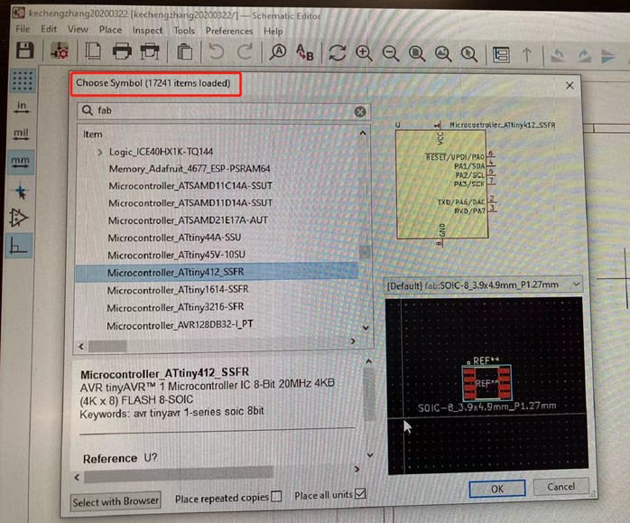
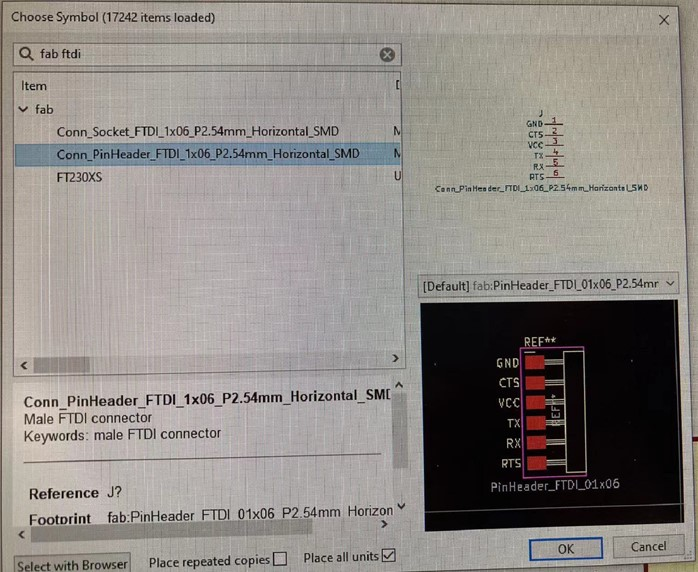
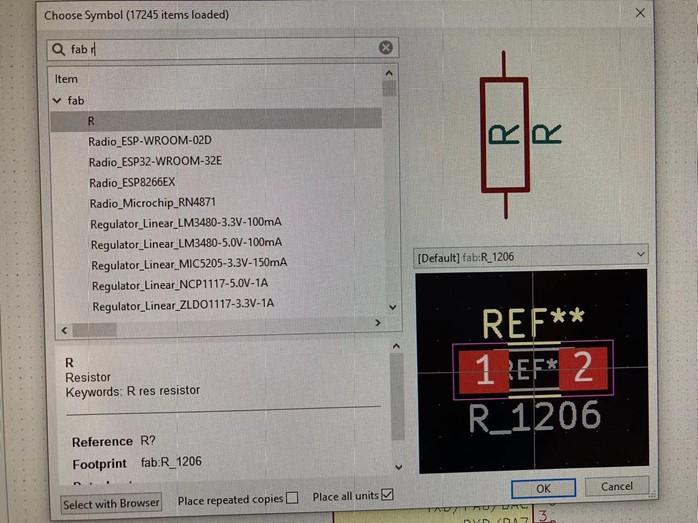
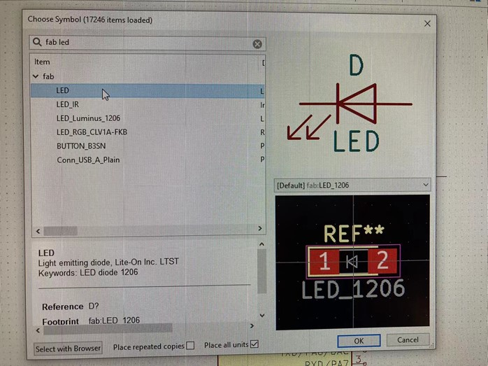
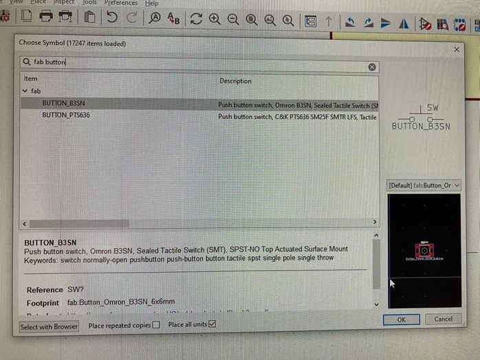
They are shown in the schematic as below:
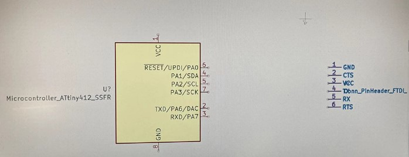
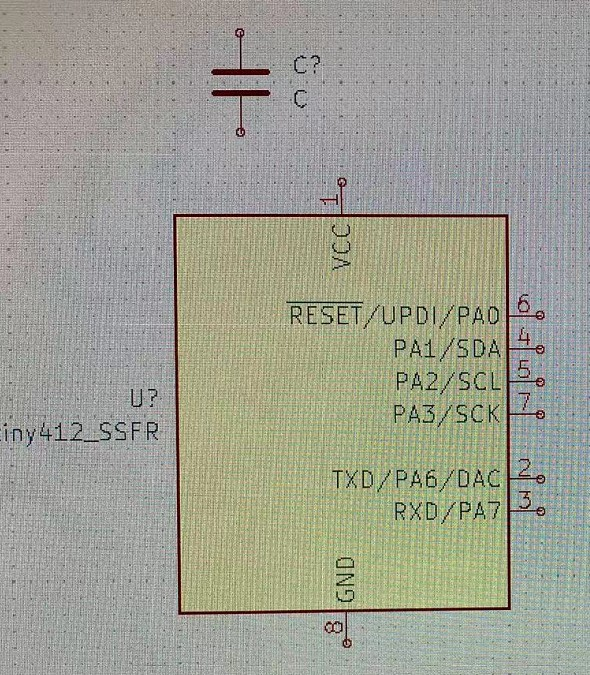
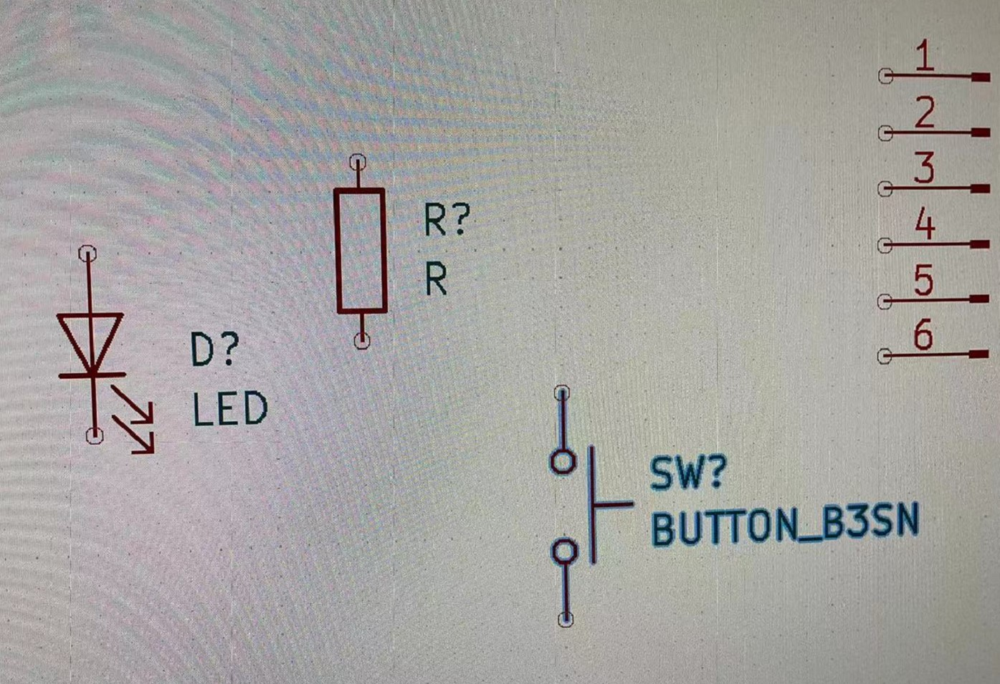
Then, add 3 VCC and 6 GND.
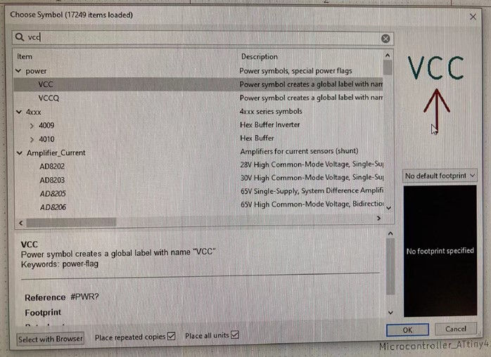
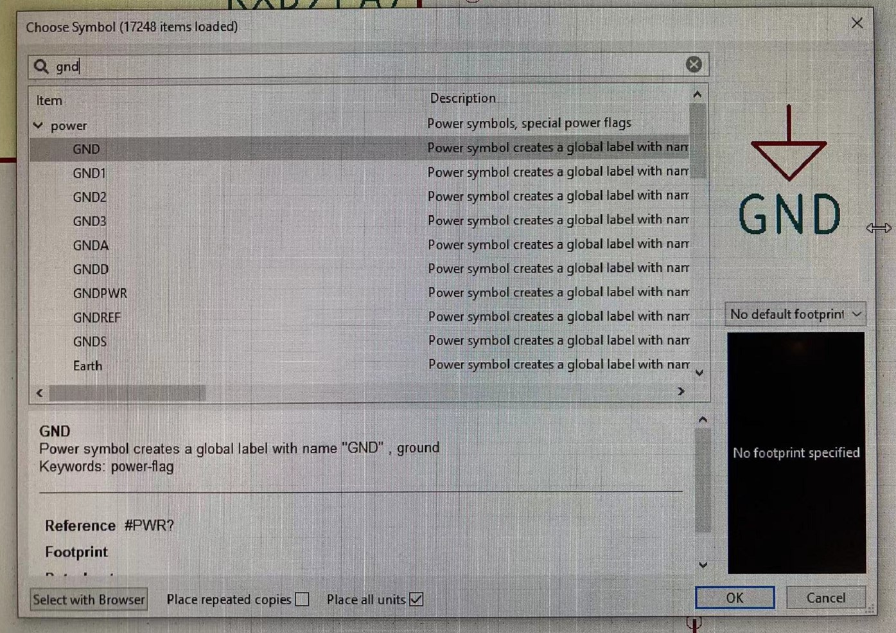
Draw lines to link the items¶
This steps is to give items electronic connections in a logical flow. To do so, you need to draw lines between different pins.
Below is the prototype:
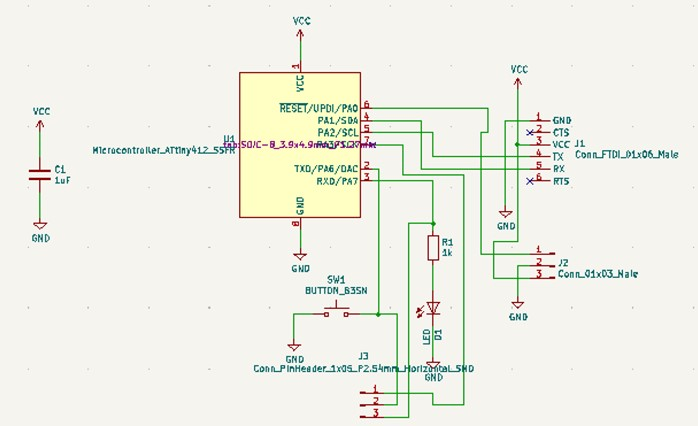
This is a quite straightforward step:
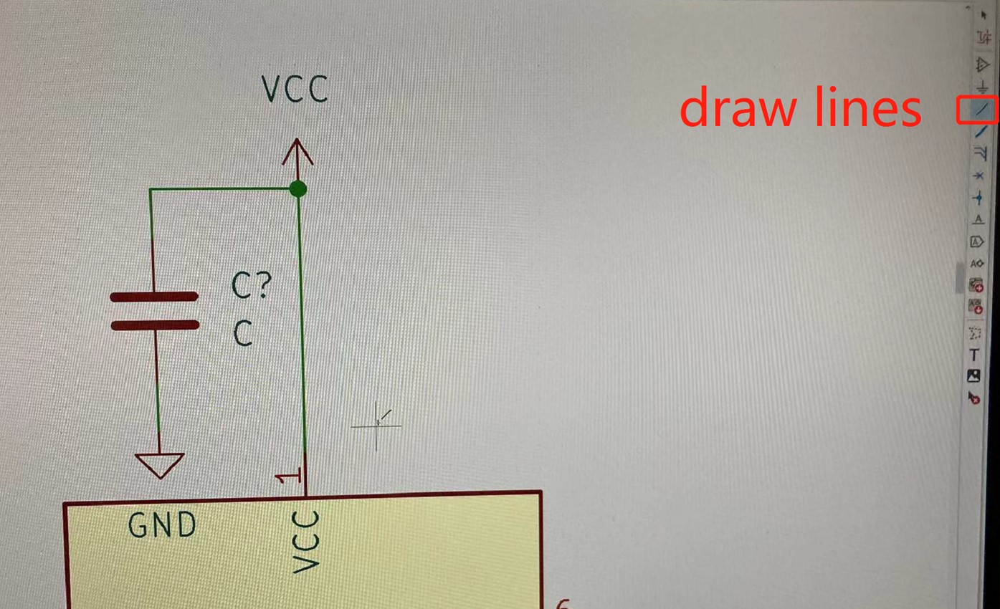
It takes patience and focus, but I got the work as below:
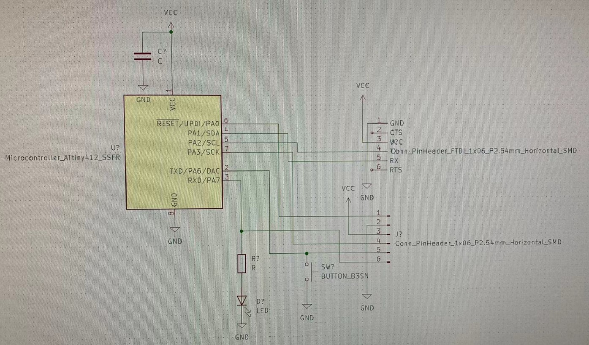